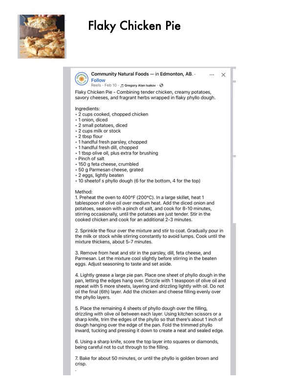

Flaky Chicken Pie

Original cookbook page 760
Combining tender chicken, creamy potatoes, savory cheeses, and fragrant herbs wrapped in flaky phyllo dough. Recipe from Community Natural Foods - Edmonton, AB.
Prep: 20 minutes • Cook: 60 minutes • Total: 1 hour 20 minutes
Ingredients
- 2 cups cooked, chopped chicken
- 1 onion, diced
- 2 small potatoes, diced
- 2 cups milk or stock
- 2 tbsp flour
- 1 handful fresh parsley, chopped
- 1 handful fresh dill, chopped
- 1 tbsp olive oil, plus extra for brushing
- Pinch of salt
- 150 g feta cheese, crumbled
- 50 g Parmesan cheese, grated
- 2 eggs, lightly beaten
- 10 sheets of phyllo dough (6 for the bottom, 4 for the top)
Instructions
- Preheat the oven to 400°F (200°C). In a large skillet, heat 1 tablespoon of olive oil over medium heat. Add the diced onion and potatoes, season with a pinch of salt, and cook for 8-10 minutes, stirring occasionally, until the potatoes are just tender. Stir in the cooked chicken and cook for an additional 2-3 minutes.
- Sprinkle the flour over the mixture and stir to coat. Gradually pour in the milk or stock while stirring constantly to avoid lumps. Cook until the mixture thickens, about 5-7 minutes.
- Remove from heat and stir in the parsley, dill, feta cheese, and Parmesan. Let the mixture cool slightly before stirring in the beaten eggs. Adjust seasoning to taste and set aside.
- Lightly grease a large pie pan. Place one sheet of phyllo dough in the pan, letting the edges hang over. Drizzle with 1 teaspoon of olive oil and repeat with 5 more sheets, layering and drizzling lightly with oil. Do not oil the final (6th) layer. Add the chicken and cheese filling evenly over the phyllo layers.
- Place the remaining 4 sheets of phyllo dough over the filling, drizzling with olive oil between each layer. Using kitchen scissors or a sharp knife, trim the edges of the phyllo so that there's about 1 inch of dough hanging over the edge of the pan. Fold the trimmed phyllo inward, tucking and pressing it down to create a neat and sealed edge.
- Using a sharp knife, score the top layer into squares or diamonds, being careful not to cut through to the filling.
- Bake for about 50 minutes, or until the phyllo is golden brown and crisp.
Recipe #760 from collection